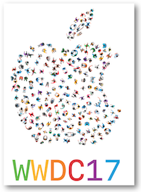
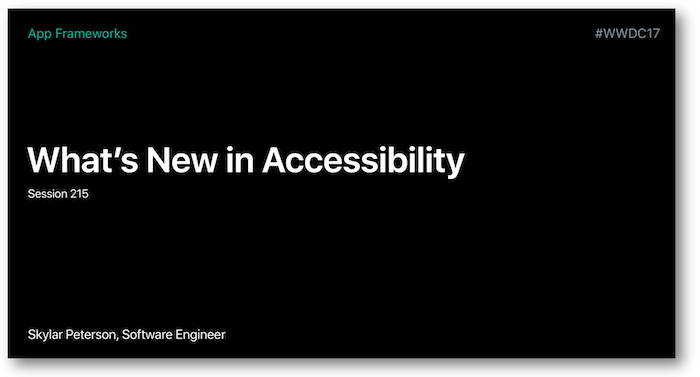
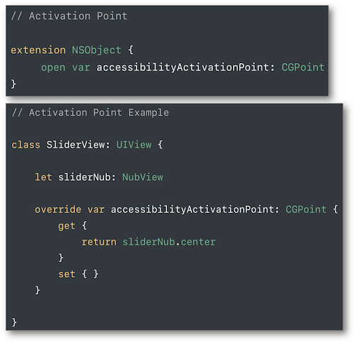

WWDC 2017 : les nouveautés en accessibilité
Cette présentation visualisable sur le site développeur officiel d'Apple (session 215) a pour but de mettre en avant les principales nouveautés iOS 11 en terme d'accessibilité avec une importance notable pour VoiceOver.


Les thèmes abordés ainsi que leur référence temporelle au sein de la vidéo sont décrits ci-dessous :
-
Détection de texte dans une image (07:07) ⟹ nouveauté iOS 11
-
Amélioration de la description d'une photo (08:01) ⟹ nouveauté iOS 11
-
Ecrire des infos pour SIRI (11:37) ⟹ nouveauté iOS 11
-
Attributed Accessibility Properties (26:07) ⟹ nouveauté iOS 11
-
Accessibility Container Type (27:20) ⟹ nouveauté iOS 11
-
Les actions personnalisées (35:43)
-
Action par défaut (37:38)
-
Sélection en défilement continu (39:40)
-
Défilement personnalisé (41:02)
-
Drag & Drop (42:54) ⟹ nouveauté iOS 11
Au cours de cette présentation, de nombreuses solutions sont proposées par le biais d'une application d'exemple pour répondre aux questions que se posent les développeurs face aux problèmes rencontrés en accessibilité avec VoiceOver (regarder l'application d'exemple avant de lire la suite) :
-
rendre un élément (in)accessible (31:10),
-
remplir des propriétés
labeletvalue(29:59), -
rassembler plusieurs éléments pour n'en former qu'un seul (31:50).
Par la suite, le fait de cliquer sur un titre permet d'ouvrir la vidéo de présentation Apple directement au moment indiqué.
Détection de texte dans une image (07:07) #
Il est désormais possible de déterminer si du texte est incrusté dans une image.

Cette détection très basique est obtenue en réalisant un tap avec 3 doigts.
Elle permet ainsi de vocaliser cette inscription à une personne qui ne peut initialement pas la détecter.
Amélioration de la description d'une photo (08:01) #
La vocalisation de la description d'une photo est une nouvelle fonctionnalité de Voice Over et est obtenue par un simple tap à l'aide de 3 doigts.

Une détection très simple du contexte, des visages et de leurs expressions est donc exposée à l'utilisateur pour qui ce type d'informations devient plus que jamais un lien fort avec son environnement.
Ecrire des infos pour SIRI (11:37) #
Nouveauté très utile pour les personnes ne pouvant pas utiliser SIRI vocalement ou désirant simplement effectuer des requêtes de façon discrète.
Pour utiliser cette fonctionnalité, il faut se rendre dans la partie Accessibilité des Réglages pour rendre l'activation effective.
Accessibility Inspector : cas pratique (15:35) #
Dans cette partie, l'outil Accessibility Inspector de Xcode est utilisé pour une démonstration d'audit accessibilité d'une application.
Des exemples sont fournis sans expliquer fondamentalement les notions propres à l'outil qui sont détaillées dans la session 407 de la WWDC en 2016.
Découvrir le protocole UIAccessibility (21:14) #
Petit rappel sur les fondements du protocole informel UIAccessibility qui vont être utilisés dans la suite de la présentation.

Attributed Accessibility Properties (26:07) #
iOS 11 permet de transformer les propriétés d'accessibilité label, value et hint de base en NSAttributedString de façon à pouvoir agir sur la façon dont ils vont être vocalisés.

Parmi les exemples fournis, on trouve la possibilité de vocaliser en langue étrangère un élément accessible bien particulier.

L'ensemble des clés utilisables se trouve sur la documentation officielle Apple.
Accessibility Container Type (27:20) #
Une définition de conteneur typé au niveau accessibilité est disponible en iOS 11.
La notion de conteneur existait déjà mais rien ne permettait au lecteur d'écran de savoir ce qu'était réellement ce conteneur.
Ce nouveau typage va donc permettre à VoiceOver de faciliter et de mieux appréhender la façon dont l'utilisateur va pouvoir naviguer au sein de ce conteneur.
Les actions personnalisées (35:43) #
Il est possible de définir sur une vue un ensemble constitué de accessibilityCustomAction de façon à lui attribuer différentes actions possibles.
Dès que cette vue est sélectionnée avec VoiceOver, un swipe vertical avec un doigt permet de déterminer l'action de son choix.
La mise en place programmatique de ce type de fonctionnement est présentée dans la partie développement.
Action par défaut (37:38) #
Afin de limiter ou de rendre plus faciles les manipulations à réaliser par les utilsateurs de VoiceOver, il est possible de déclencher des actions appropriées dès qu'un élément est activé par un double tap.

Les valeurs continûment ajustables (38:22) #
La modification de valeur pour des éléments tels que le slider ou le picker peut se faire de façon très fluide grâce à l'implémentation de deux fonctions :

Dès que la vue est sélectionnée avec VoiceOver, un swipe vertical avec un doigt permet d'augmenter ou de diminuer la valeur.
La mise en place programmatique de ce type de fonctionnement est présentée dans la partie développement.
Sélection en défilement continu (39:40) #
L'application d'une double pression d'un doigt accompagnée d'un maintien à l'issue sur un défilement panoramique permet de déclencher la fonctionnalité pass-through de VoiceOver.

Cette fonctionnalité permet d'obtenir une sélection beaucoup plus précise de la valeur remontée.
Il est donc possible de préciser à VoiceOver le focus de l'élément sélectionné grâce à l'attribut accessibilityActivationPoint de façon à indiquer finement à l'utilisateur où il se trouve au niveau du panoramique.

Défilement personnalisé (41:02) #
Le défilement classique de pages proposé par VoiceOver se fait avec un swipe à l'aide de 3 doigts.
Il est toutefois possible de personnaliser le résultat obtenu grâce à la méthode accessibilityScroll présente dans le protocole UIAccessibilityAction.

Drag & Drop (42:54) #
Nouveauté iOS 11, le drag-and-drop présenté en accessibilité ne décrit pas la nouvelle API mais rappelle les 2 principes primordiaux autour desquels s'appuie son fonctionnement : les drag sources et les drop points.

Leur utilisation est ensuite succinctement proposée par le biais d'un exemple.